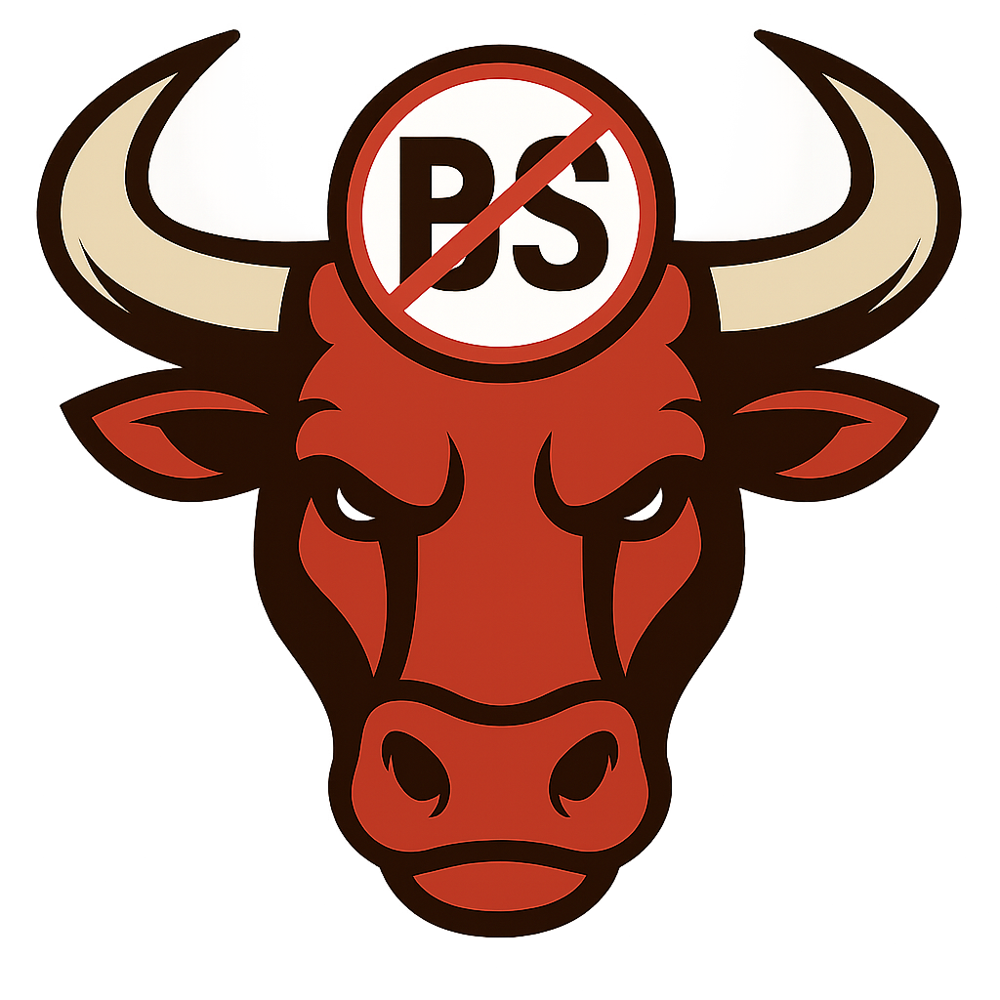

Bulls Not BS
Size your next stock purchase when the market dips.

Answer YES or NO for each. YES means you're good to go. NO means you should pause and think.
Are there NO earnings reports within the next 5 days?
Quick check: Search "[TICKER] earnings date" or check MarketWatch, Yahoo Finance, or your brokerage app. Takes 30 seconds.
Earnings can surprise. Either wait until after the call, or buy a smaller amount now and save room to buy more after you hear the guidance.
Is your conviction (confidence) in the company's worthiness still intact? Check your confidence
If the dip shook your conviction, that's a warning. A low price is only a buying opportunity if the business fundamentals are still solid.
Are insiders NOT selling right now?
Check insider trading activity in your brokerage app or SEC filings. If company insiders are selling, that's a red flag. Wait until insider selling stops before buying.
Have you bought this stock fewer than 4 times this month?
Pace yourself. Buying too frequently can lead to averaging into a bad position or chasing momentum instead of following your framework. Space purchases across different weeks or months.
Will this purchase keep your cash above 10%? Dry Powder Best Practices
Keep at least 10% of your investable money in cash at all times. Good dips happen several times a year. Never drop below 5% cash, and 10% is safer.
Are you NOT creating deworsification by adding to this position? Learn about deworsification
Stick to your framework tiers: Core positions 15–25%, Satellites 5–10%. Don't let a dip tranche turn a solid position into a bloated one. Quality over quantity.
Don't buy at market open (9:30 AM ET). That's when panic selling and emotional decisions happen. Instead, buy in the mid-to-late afternoon (2–3 PM ET / 1–2 PM CDT).
Why afternoon is better:
Not all stocks get the same percentage of your portfolio. The framework adapts to your experience level and available capital:
Key principle: The more positions you own, the smaller each one should be as a percentage. The fewer positions you own (because you've deeply researched them), the larger each can be.
A tranche is a measured portion you buy on a dip. The formula:
Dip % × Current Cost Basis = Tranche (capped at 20% of cost basis)
Example: Your $10K Core position drops 5%. Your tranche = 5% × $10K = $500. You can buy $500 more, but it can't push the total above your tier ceiling ($20K for Core-Conviction).
Always keep at least 10% of your investable money in cash. Good dips happen several times a year. If you spend all your dry powder on the first dip, you won't have ammo for the next one.
Deworsification is the silent killer of returns. It's what happens when you spread your money across too many positions, diluting each one until none of them matter anymore.
Charlie Munger (Warren Buffett's longtime business partner and one of the most respected investors of all time) argues for concentration—a smaller number of stocks you truly understand, not a huge list of mediocre bets. Each tranche should strengthen your position, not weaken it. If adding to a stock would push you way above your framework tier, that's a signal to stop buying and move on to another position.
Red flag: If you own 15+ stocks, you probably own too many. If you can't articulate the thesis for each one in under 2 minutes, you're holding too much.
Dry powder is cash you've set aside for investing. It's your ammunition for when dips happen. Stock market dips occur regularly—3–5 times per year on average. If you spend all your cash on the first dip, you'll be defenseless for the next one.
Minimum: Keep at least 10% of your investable money in cash.
Safety buffer: Never let a dip purchase drop you below 5% cash.
Ideal: 10–20% cash gives you flexibility without sitting on unused money.
You have $50,000 to invest. Your 10% cash floor = $5,000. You should never spend more than $45,000 on positions. That way, if the market dips 20% tomorrow, you have $5,000 ready to buy more.
Use this framework to validate your conviction in any company before buying the dip:
If the dip shook your conviction on ANY of these 12 steps, then it's not a buying opportunity—it's a warning sign.
Enter the company name or ticker below. We'll generate a prompt you can copy and paste into your favorite AI to get all 12 questions answered.
Note: These buttons will open each platform. Paste the prompt above into the chat to get started.
Deworsification is spreading your money across too many positions, diluting each one until none of them matter. You end up with a bloated portfolio of mediocre bets instead of a focused set of high-conviction positions.
Stick to your tier sizes:
If a dip tranche would push a position way above its tier, skip the dip. Move on to another position or wait for the next opportunity.
If you own 15+ stocks, you probably own too many. If you can't explain your thesis for each position in under 2 minutes, you're holding too much.
Optional — helps you keep track, doesn't affect the calculation.
Dry powder: Cash you've set aside for investing that you're not currently using. Learn why it matters
Example: If you bought at $100 and it's now at $95, that's a 5% drop.
Max position size: The largest dollar amount you'd put into one company. Tier sizing guide
Optional — helps you keep track, doesn't affect the calculation.
Cost basis: Total amount of money you've spent on this position so far.
No problem! Start by exploring the sections above. Come back when you're ready to practice or invest.
FRAMEWORK VERDICT
Enter values to calculate
Fill in all fields above
This calculator is educational only. It shows you one approach to thinking about position sizing. You make the final decision. Always run your own analysis, understand your thesis, and only invest money you can afford to lose.